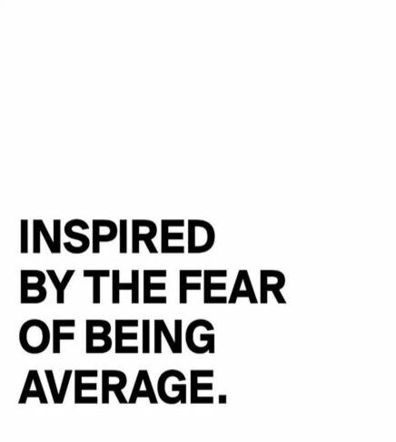
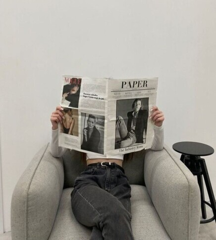
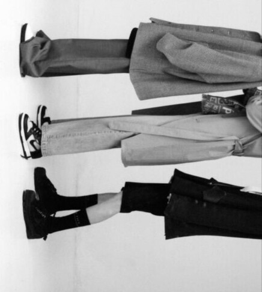

¡Bienvenidos a mi blog!
Hola a todos! Soy Delfina von der Becke, una persona en formación activa con gran interés en marketing, la creatividad, las comunicaciones y la logística.
Aunque mi experiencia laboral no es formal, estoy construyendo mi perfil profesional paso a paso y este blog es para contarte parte de ese proceso,
junto con las ideas que se me van ocurriendo a medida que transcurso mi carrera.



¿Qué encontrarás en este blog?
Acá comparto aquello que voy aprendiendo a medida que desarrollo mi perfil profesional:
- Ideas creativas
- Reflexiones sobre comunicación efectiva
- Propuestas de campañas
- Organización de proyectos
- Análisis de marcas y estrategias que me inspiran
- Entre otras temáticas